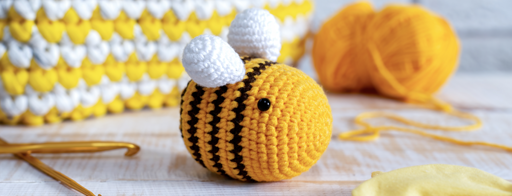
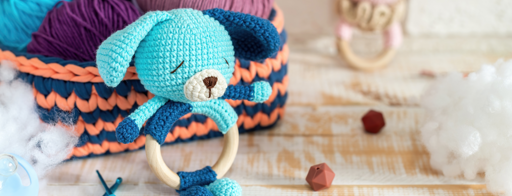
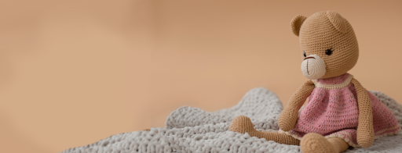

¡Nuestras creaciones más populares!

¿Abejtia, abejita, por qué eres tan adorable? Dulce como la miel, achuchable y blandita

Un sonido tan agradable que llama la atención hasta del más gruñón

Una osita que va vestida de rosita y es tan bonita que le gusta dormir abrazadita